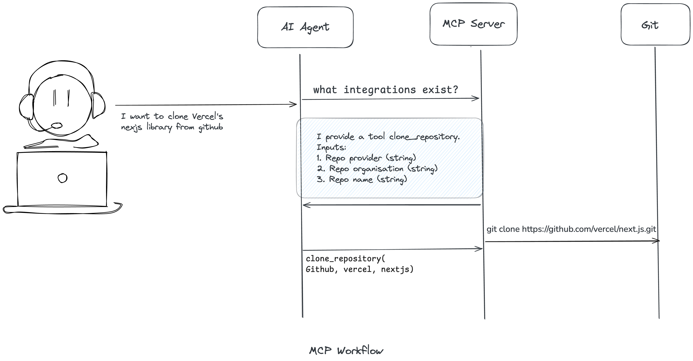
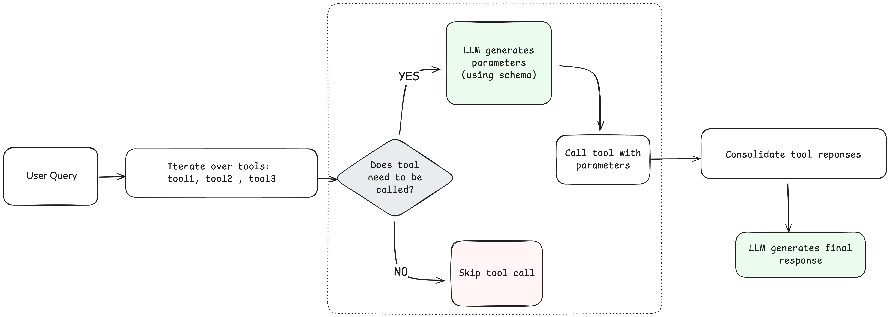

(Part 1) How to connect your LLM Agent to MCP server
The Model Context Protocol (MCP) is quickly emerging as a foundational layer in the AI engineering stack — yet most conversations around it remain either too shallow or overly speculative. This blog series aims to cut through the noise.
I’ll dive into what makes MCP unique, where it fits in the AI stack, and why some teams are quietly treating it as infrastructure. Along the way, we’ll explore topics like connecting LLMs to MCP servers, benchmarking tool retrieval, enabling human-in-the-loop workflows, multi-tenancy ,addressing security vulnerabilities and more.
If you’re building serious AI systems or just curious about where things are headed, stay tuned. For the Part 1 of the MCP series , we will talk about to connect your LLM to a MCP server.
Model Context Protocol (MCP)
Model Context Protocol (MCP) is an open protocol introduced by Anthropic in late 2024 to standardize how AI models connect to external data sources and tools. At it's core, it defines a common format for a Client to invoke operations on a external tool or service in a predictable way. Thus, by providing a uniform interface, MCP is intended to do for AI-agent integrations what traditional APIs did for web services – enable any AI application to talk to any service using a predictable, well-defined contract

Why should you care?
Model Context Protocol brings in a few properties in Agentic workflows which was previously missing in the AI stack
-
Predictable Behavior with Tools - In the past, integrations with agents relied on hard-coded API calls or tools inferred from documentation. MCP provides a well-defined interface for tool invocation with standardized discovery, invocation patterns, and error handling. This determinism makes agent behavior more predictable and safe, solving integration challenges with services like GitHub, Jira, and other tools.
-
Reusability of Tools - Tool developers can implement an MCP server once, making it available to any MCP-compatible client. This creates an ecosystem of reusable components, similar to how npm packages work for JavaScript. For example, once someone builds a Google Drive MCP server, many different applications can access data from Google Drive without each developer needing to build custom connections.
- Consistent Agent Interface - MCP is the action taking interface. It removes the need for custom logic for implementations. For a developer the steps are straightforward -- Implement a MCP server, Register it with Agent PLatform
- Flexible Integration - Clients and servers can dynamically discover each other's capabilities during initialization, allowing for flexible and extensible integrations that can evolve over time.
Easy implementation
Let's look at a example on how to connect your LLM to a MCP server using Agentic library like Pydantic AI. You can create your own MCP server like this. But right now we will use SQLite MCP server for this example. This MCP server has tools like 'read_query', 'write_query', 'create_table', 'list_tables', 'describe_table', 'append_insight' to perform different function on the sqlite database.
from pydantic_ai import Agent
from pydantic_ai.mcp import MCPServerStdio
server = MCPServerStdio(
"uvx",
args=[
"mcp-server-sqlite",
"--db-path",
"db.sqlite",
],
)
agent = Agent("openai:gpt-4o", mcp_servers=[server])
async def main():
async with agent.run_mcp_servers():
result = await agent.run(
"see if the table animal exists. If it exists, give description of the table"
)
print(result.output)
# The table `animals` exists and has the following structure:
# - `name` (TEXT): The name of the animal.
# - `type` (TEXT): The type or species of the animal.
# - `age` (INTEGER): The age of the animal.
Detailed Breakdown
Pydantic AI hides away a lot of complexity of the LLM workflow with MCP tools that is happening under the hood. We'll unravel some of the important steps.
Access tools through MCP Client
from fastmcp import Client
config = {
"mcpServers": {
"sqlite": {
"command": "uvx",
"args": ["mcp-server-sqlite", "--db-path", "db.sqlite"],
}
}
}
async def example():
async with client:
tools = await client.list_tools()
print([tool.name for tool in tools])
# > ['read_query', 'write_query', 'create_table', 'list_tables', 'describe_table', 'append_insight']
print(tools[1].inputSchema)
# > {'type': 'object', 'properties': {'query': {'type': 'string', 'description': 'SQL query to execute'}}, 'required': ['query']}
asyncio.run(example())
Here the client when connected to the SQLite MCP server can fetch all the tools in the server with their input schema.
LLM selects the right tools from MCP server
Based on the user query , LLM decides which tools to calls for execution.
import instructor
async_client = instructor.from_openai(AsyncOpenAI())
class FunctionList(BaseModel):
"""A model representing a list of function names."""
func_names: List[str]
## modified example function
async def example(user_query: str):
async with client:
tools = await client.list_tools()
print([tool.name for tool in tools])
# > ['read_query', 'write_query', 'create_table', 'list_tables', 'describe_table', 'append_insight']
print(tools[1].inputSchema)
# > {'type': 'object', 'properties': {'query': {'type': 'string', 'description': 'SQL query to execute'}}, 'required': ['query']}
try:
response = await async_client.chat.completions.create(
model="gpt-4o",
messages=[
{
"role": "system",
"content": f"""Identify the tools that will help you answer the user's question.
Respond with the names of 0, 1 or 2 tools to use. The available tools are
{tools}.
Don't make unnecessary function calls.
""",
},
{"role": "user", "content": f"{user_query}"},
],
temperature=0.0,
response_model=FunctionList,
)
print(response)
except Exception as e:
print(f"Error in API call: {str(e)}")
return None
Tool definition
For the selected tools, create ToolDefinition for each tool which will be used to create Pydantic model for LLM response format
tool_definitions = []
for func_name in response.func_names:
# Find the tool by name
tool = next((t for t in tools if t.name == func_name), None)
if tool:
tool_def = ToolDefinition(
name=tool.name,
description=tool.description,
parameters_json_schema=tool.inputSchema,
)
tool_definitions.append(tool_def)
else:
print(f"Tool {func_name} not found in tools list.")
Invoke tool calls using LLM
For each tool, the LLM iteratively decides if the a tool needs to be called based on the user query and outputs the parameters for the tool call.

gpt_response = []
for tool_calls in tool_definitions:
x = create_model_from_tool_schema(tool_calls) ## creates Pydantic model for structured output
response1 = await async_client.chat.completions.create(
model="gpt-4o",
messages=[
{
"role": "system",
"content": f"""Figure out if the {user_query} has been resolved without the tool call or not.If not, execute the tool call with the right parameters for the {tool_calls.name} tool with description {tool_calls.description}.
""",
},
{"role": "user", "content": f"{gpt_response}"},
],
temperature=0.0,
response_model=x,
)
res = None
if response1 is not None:
res = await client.call_tool(
tool_calls.name, response1.model_dump()
)
gpt_response.append(res)
Final Response to User
And finally consolidating Consolidate all the tools call reponse and give it to LLM to generate a final response for the user query
final_llm_response = await async_client.chat.completions.create(
model="gpt-4o",
messages=[
{
"role": "system",
"content": f"""Consolidate all the reponse from the tools calls and give the user appropriate answer to the {user_query}.
""",
},
{"role": "user", "content": f"{gpt_response}"},
],
temperature=0.0,
response_model=LLMResponse,
)
return final_llm_response
if __name__ == "__main__":
tools_called = asyncio.run(
example(
"see if the table animal exists. If it exists, give description of the table"
)
)
User Query : "see if the table animal exists. If it exists, give description of the table"
Response : The table "animals" does exist in the database. It has the following structure:
1. name: Type - TEXT, Nullable - Yes
2. type: Type - TEXT, Nullable - Yes
3. age: Type - INTEGER, Nullable - Yes
This table does not have any primary key defined
DAG-based Solution
A DAG-based workflow would help in orchestrating complex, multi-step, and data-dependent tool interactions between your LLM agent and an MCP server.
Suppose your LLM agent receives a user query: "List all tables in the database and describe each one."
With a DAG-based approach:
- The agent calls the list_tables tool (root node).
- For each table returned, the agent creates a node to call the describe_table tool.
- The results are gathered and passed to the LLM for summarization or further reasoning. This pattern generalizes to any scenario where tool outputs are variable in number or structure, and where subsequent tool calls depend on those outputs.
Conclusion
MCP makes tool execution deterministic but a Agent's decision to invoke the right tool with right parameters is driven by LLM which is non-deterministic. In the next part of the series, we'll see how evaluation of tool retrieval is important to making your agent work and improve them consistently